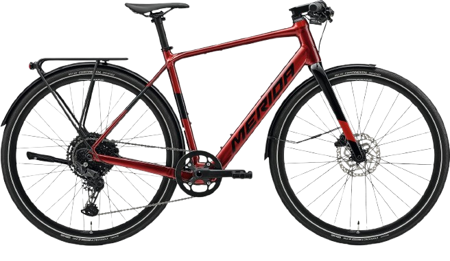
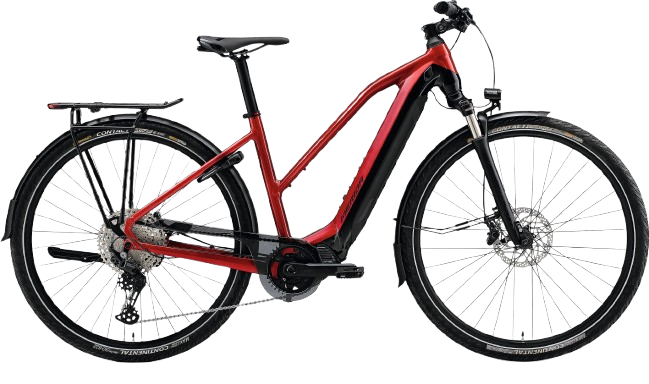
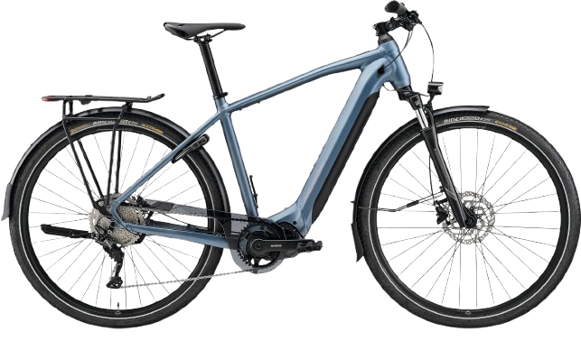
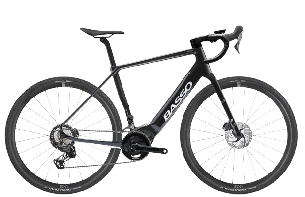
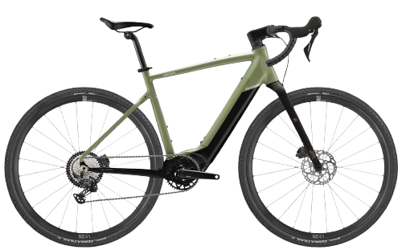
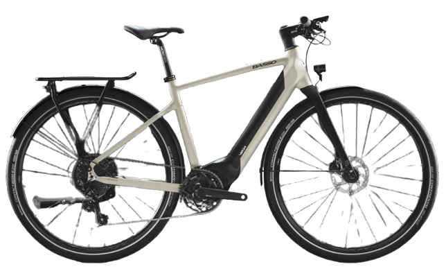

Wartung & Inspektion
Regelmäßige Wartung für zuverlässige Funktion, Sicherheit und lange Lebensdauer deines E-Bikes.
Radologe
Radsport & Werkstatt in Stuttgart
Persönliche Beratung, zuverlässiger Service und passende Lösungen für dein E-Bike. Wir begleiten dich von der Wartung über Reparaturen bis zur Auswahl des passenden Modells.
Nicht nur Technik, sondern Beratung, die zu deinem Einsatzbereich und deinem Rad passt.
Regelmäßige Wartung für zuverlässige Funktion, Sicherheit und lange Lebensdauer deines E-Bikes.
Fachgerechte Reparaturen an E-Bikes – abgestimmt auf Zustand, Nutzung und technische Anforderungen.
Persönliche Einschätzung zu Nutzung, Komponenten, Systemen und sinnvollen Lösungen rund ums E-Bike.
Unterstützung bei der Auswahl eines passenden E-Bikes – individuell statt pauschal.
Drei Beispiele aus dem Centurion Sortiment – für unterschiedliche Einsatzzwecke und mit persönlicher Beratung bei uns vor Ort.
Alle Centurion Modelle ansehen →
Centurion
Sportliches E-MTB Hardtail für dynamische Touren und vielseitigen Einsatz mit kraftvollem Bosch-Antrieb.

Centurion
Vielseitiges E-Bike für Touren, Alltag und leichte Offroad-Strecken – komfortabel, robust und flexibel einsetzbar.

Centurion
Komfortables E-Bike für Alltag und Stadt – mit tiefem Einstieg, aufrechter Sitzposition und zuverlässigem Bosch-Antrieb für entspanntes Fahren.
Drei Beispiele aus dem Merida Sortiment – für Alltag, Tour und sportliche Nutzung mit persönlicher Beratung bei uns vor Ort.
Alle Merida Modelle ansehen →
Merida
Sportliches, leichtes E-Bike für Stadt, Pendeln und schnelle Alltagswege – mit praktischer Ausstattung für den täglichen Einsatz.

Merida
Komfortables E-Bike mit tiefem Einstieg für Alltag und Tour – ideal für entspanntes Fahren mit zuverlässiger Unterstützung.

Merida
Vielseitiges E-Bike für Alltag, Freizeit und längere Strecken – komfortabel, alltagstauglich und flexibel einsetzbar.
Drei Beispiele aus dem Basso E-Bike Sortiment – sportlich, hochwertig und mit Fokus auf Design, Performance und Fahrgefühl.
Alle Basso E-Bikes ansehen →
Basso
Sportliches E-Bike für Fahrerinnen und Fahrer, die Wert auf Performance, Qualität und ein dynamisches Fahrgefühl legen.

Basso
E-Gravelbike für vielseitige Strecken, sportliche Touren und Fahrten abseits klassischer Straßen.

Basso
Urbanes E-Bike für Stadt, Alltag und Pendelstrecken – hochwertig, modern und auf komfortable Mobilität ausgelegt.
Technik ist das eine – entscheidend ist, dass dein E-Bike wirklich zu dir passt.
Bei uns bekommst du keine Standardlösung, sondern eine ehrliche Einschätzung und persönliche Beratung. Wir nehmen uns Zeit, verstehen deinen Einsatzbereich und finden gemeinsam die passende Lösung – egal ob beim Kauf, bei der Wartung oder bei Reparaturen.
Nicht jedes E-Bike passt zu jedem Alltag. Entscheidend sind Strecke, Sitzposition, Einsatz und Fahrgefühl.
Wir erklären dir Systeme und Unterschiede so, dass sie im Alltag wirklich verständlich und sinnvoll sind.
Wer das passende E-Bike wählt und sauber warten lässt, hat länger Freude daran und fährt zuverlässiger.
Ob Kaufinteresse, Wartung oder Reparatur: Melde dich bei uns und lass dich persönlich beraten.